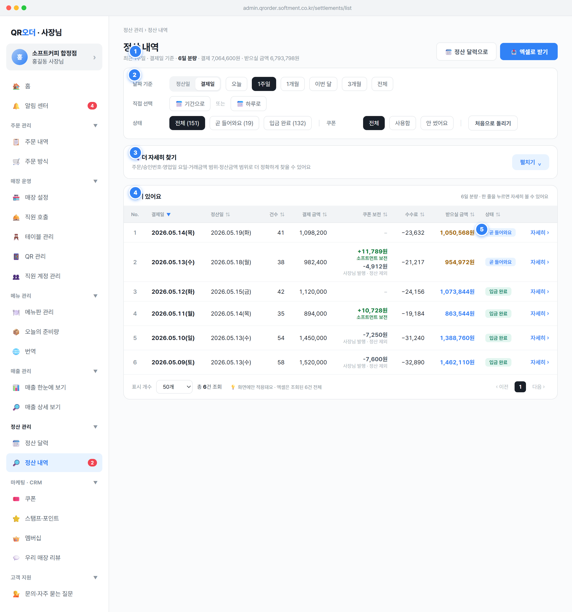

정산 관리 › 정산 내역 + 제목 정산 내역 + 보조문구(.page-sub)로 구성.🗓️ 정산 달력으로, 📤 엑셀로 받기)을 제공.state.stlListDateBasis 초기값에 따른다. 단 핀2의 기준 토글로 결제일/정산일 전환 시 보조문구의 '결제일 기준' / '정산일 기준' 라벨과 합계가 즉시 재계산된다.📅 {날짜} · {기준} 기준 · N일 분량 · 받으실 금액 {금액}원, 그 외 기간 선택 시 {기간라벨} · {기준} 기준 · N일 분량 · 결제 {gross}원 · 받으실 금액 {totalSettle}원.🗓️ 정산 달력으로 클릭 → setSection('stl-calendar')(stl-calendar 화면 이동). 📤 엑셀로 받기 클릭 → openExport(rows.length, '정산 내역', '{기간라벨} · {기준} 기준') 모달 오픈.DAY(영업일별 매출) 각 일자를 findSettlementByOrderDate(iso)로 SETTLEMENTS 회차에 매핑한 평면 리스트 dailyList. 1행=1영업일.grossAmt(결제 금액, int 원), totalSettle(받으실 금액, int 원), rows.length(N일 분량).DAY 값을 그대로 사용.0원으로 표기하고 부정형("내역이 없어요")은 피한다 — 빈 상태 문구는 핀4에서 처리.받으실 금액 사용("정산액"·"미지급" 등 부정·딱딱한 표현 회피)..search-wrap). 날짜 기준(정산일/결제일) 전환 + 기간 프리셋/직접 선택 + 정산 상태 + 쿠폰 사용 여부로 목록을 좁히는 핵심 조회 컨트롤.정산일 / 결제일 2-state. 클릭 → setStlListBasis('settle'|'approval'), basisKey가 settleISO|approvalISO로 바뀌어 기간 필터·정렬·합계 모두 그 키 기준으로 재조회.오늘/1주일/1개월/이번 달/3개월/전체. 클릭 → setStlListQuick(k)가 stlListQuickRange 설정 + stlListSpecificDate 초기화. 매핑: today=오늘 1일, 1w=7일, 1m=31일, 3m=93일, thismonth=2026-05 전체, all=전체.📅 기간으로 클릭 → period 모드 진입(기본 2026-05-01~05-15), date input 2개(max=TODAY_DATE) 입력 시 stlListPeriodStart/End 갱신·재조회, ✕ 해제로 1w 복귀. 📅 하루로 클릭 → specific 모드(기본 TODAY_DATE), 변경은 applyStlSpecificDate().전체(N) / 곧 들어와요(N) / 입금 완료(N) — setStlListStatus('all'|'정산대기'|'정산완료'). 괄호 카운트는 전체 dailyList 기준 고정(필터와 무관).전체 / 사용함 / 안 썼어요 — setStlListCoupon('all'|'used'|'none'), used는 platform 또는 merchant 쿠폰 사용 일자만.resetStlListFilters(): 기준=approval, 기간=1w, 상태=all, 쿠폰=all 등 전체 초기화.state.stlListDateBasis('settle'|'approval'), stlListQuickRange('today'|'1w'|'1m'|'thismonth'|'3m'|'all'|'period'|'specific'), stlListPeriodStart/End(ISO date str), stlListSpecificDate(ISO date str), stlListStatus, stlListCoupon.정산완료(pill=done, '입금 완료') / 정산대기(pill=pending, '곧 들어와요') / 보류(held)(pill=hold, '확인 중' — 마감 후 환불>다음 회차 등, STATES §8.2·DATA_MODEL §8.1). 기본 산정은 settleISO ≤ todayISO ? 정산완료 : 정산대기, held는 정산 시스템 플래그로 별도 표기.basisKey 값으로 r[basisKey] >= start && <= end 비교. 정산일 기준이면 settleISO 없는 미래/산정중 행은 자연히 제외.settlements(회차) ↔ DAY 매핑. 영업일 03:00 경계(SPEC §1.1), 정산 사이클 D+3 영업일(STATES §8.1).max=TODAY_DATE로 오늘 이후 선택 차단(미래 매출은 정산 대상 아님 — SETTLEMENTS 생성에서 approvalISO > todayISO 제외).안 썼어요, 초기화는 처음으로 돌리기 사용.산정 중으로 노출(핀4 참조)..adv-search-panel, 접기/펼치기). 1차 필터로 못 좁히는 세부 조건—주문/승인번호·영업일 요일·거래금액 범위·정산금액 범위—으로 정밀 조회.toggleStlAdvanced()로 stlListAdvancedOpen 토글. 버튼 라벨 펼치기/접기 + 캐럿. 적용 중 조건이 있으면 헤더에 {N}개 조건 적용 중 배지 + {조건명} (으)로 좁혀서 보고 있어요 안내.전체/월~일요일 → setStlListDow(w). approvalDow 기준 필터.stlListAmtMin/Max) → grossAmt가 범위 내인 행만. 정산 금액 범위: stlListSettleMin/Max → totalSettle 기준. 🔍 검색 버튼으로 renderApp() 재조회.stlListOrdSearch, placeholder 🔍 주문번호(예: 20260515-0046) 또는 승인번호(예: 30150046)): 입력 시 기간 필터를 우회하고 전체 dailyList에서 매칭 주문의 결제 일자만 남김(#·공백·- 제거 후 부분일치).처음으로 돌리기가 이 고급 조건도 함께 초기화.stlListAdvancedOpen(bool), stlListDow('all'|요일), stlListAmtMin/Max(string→Number), stlListSettleMin/Max(string→Number), stlListOrdSearch(string).ORDERS를 순회해 o.id(주문번호)·makeApproval(o)(승인번호) 정규화 후 부분일치, 매칭된 o.date 집합으로 행 필터 — 주문 내역 화면과 동일 키 연동.Number() 변환 시 무시되도록 처리 권장.다른 조건으로 다시 찾아봐 주세요. + 처음으로 돌리기 링크.주문/승인번호·영업일 요일·거래금액 범위·정산금액 범위로 더 정확하게 찾을 수 있어요..panel.tight 내 table.t). 회차/일자별 정산을 컬럼으로 펼쳐 결제→수수료→받으실 금액의 계산 흐름을 투명하게 보여주는 본문.No. · 결제일 · 정산일 · 건수 · 결제 금액 · 쿠폰 보전 · 수수료 · 받으실 금액 · 상태 · (자세히 화살표). 금액 컬럼은 우측정렬(.num).setStlListSort(key) asc/desc 토글. 기본 정렬 {key:'approvalISO', dir:'desc'}(최신 결제일 먼저).+{금액}원 + 소프트먼트 보전(정산에 더함). 사장님 발행 쿠폰은 회색 -{금액}원 + 사장님 발행 · 정산 제외(참고 표시, 정산 미반영). 둘 다 없으면 −.−{feeTotal} 음수 표기. 받으실 금액: 정산완료는 파란색, 정산대기는 주황(#a25e00) 강조.orderRowsPerPage) + 총 N건 조회 + 안내 💡 화면에만 적용돼요 · 엑셀은 조회된 N건 전체. 페이지네이션은 정적(paginationStatic(1,1)).여기 있어요 + 부제 N일 분량 · 한 줄을 누르면 자세히 볼 수 있어요.approvalDate/Dow, settleDate/Dow, cnt(int), grossAmt(int 원), couponPlatformAmt(소프트먼트 보전 +), couponMerchantAmt(사장님, 참고), feeTotal(int), totalSettle(int), status, settlementId.feeBase = round((gross − ref) × AVG_FEE_RATE)(요율 0.02, 환불분은 카드사가 수수료 환급하므로 gross−ref 기준), feeVat = round(feeBase × 0.1), feeTotal = feeBase + feeVat.txSettle = gross − ref − feeTotal, totalSettle = txSettle + couponPlatformAmt. 사장님 발행 쿠폰(couponMerchantAmt)은 정산에서 제외(사장님 할인 disc로 실매출에서 차감되는 가맹점 부담 — 정산은 결제 실액 기준이라 보전 무가산, coupon 화면과 동일). 화면 핀 타이틀의 "받으실 금액 = 결제금액 + 쿠폰 보전 − 수수료"는 환불 0 가정의 단순식이며, 실제식은 위 환불 차감 포함식이 우선.DAY 소스, 행 클릭은 stl-detail로 settlementId 전달.다른 조건으로 다시 찾아봐 주세요. + 파란 링크 처음으로 돌리기(resetStlListFilters()). colspan 10 한 줄.산정 중(회색 11px) 표기, settlementId 없으면 행 클릭 비활성·자세히 칸은 −.정산완료 → <span class="pill done">입금 완료</span>, 정산대기 → <span class="pill pending">곧 들어와요</span>, 보류(held) → <span class="pill hold">확인 중</span>(STATES §8.2). 기본 산정은 settleISO ≤ todayISO 비교 + held 플래그.settlementId가 있으면 행 전체 클릭 → openStlDetail(settlementId) → stl-detail 화면(state.stlDetailId 세팅). 자세히 칸은 파란 자세히 › 표시.settlementId 형식 STL-2026{정산일MMDD}-{승인일MMDD}(예: STL-20260519-0515)로 회차 고유 식별. stl-detail 진입 키.status('정산완료'|'정산대기'), statusPill('done'|'pending'). 회차 묶음 필드 approvalDays[](각 영업일 date/dow/gross/ref/cnt) 상세에서 사용.addBizDays(결제일, 3) — 주말·공휴일(isHoliday) 제외 D+3 영업일(STATES §8.1). 정산 사이클은 영업일 종료(02:59:59)→다음날 03:00 배치(SPEC §1.1).status='held' 처리, 본사 CS 채널로 후속 처리(STATES §8.2). 표/상세에 보류 상태 별도 안내 노출 권장.Payment.status='paid' 여부로 구분 — paid면 결제 취소(환불 발생→정산 차감), 아니면 주문 취소(정산 영향 없음). 후불도 결제 완료 후 환불은 결제 취소로 처리.settlementId 없는 산정 중 행은 클릭 비활성, 자세히 칸 −로 진입 차단.곧 들어와요/입금 완료 사용.